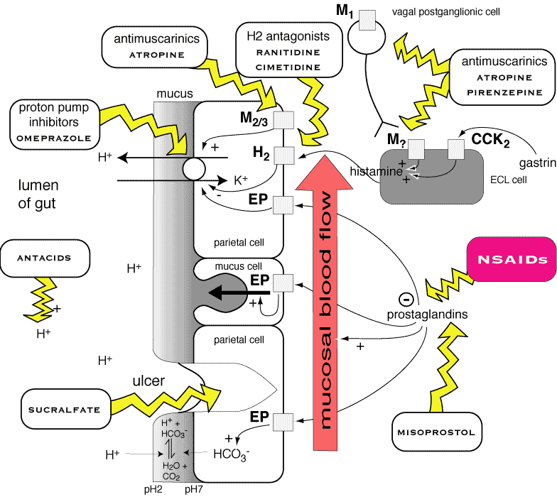

Sites of action of drugs used to treat gut ulcers. Note that NSAIDs cause ulcers.
Gastric acid makes ulcers worse and stops them healing; inhibitors of gastric
acid secretion encourage their resolution. Many cases of ulcers in dogs are
caused by non-steroidal anti-inflammatory drugs, although there are many possible
causes. Helicobacter pylori infection is recognised as very important
in people and possibly some other species, but its role in the dog is unclear.
Drugs used to inhibit acid secretion are often classified into three groups:
receptor antagonists that block the interaction of secretagogues with their
receptors (eg. anticholinergics, H2-receptor antagonists); drugs
that act on cellular metabolism to inhibit hydrogen ion secretion (eg. prostaglandins)
; and proton pump inhibitors such as omeprazole which inhibit the H+/K+
ATPase in the apical parietal cell membrane (diagram).
Altering gastric pH will also alter the absorption of many drugs, so H2antagonists
and proton pump inhibitors can cause many interactions.
Cimetidine inhibits histamine-stimulated gastric acid secretion in dogs and cats). Ranitidine is more potent and longer acting, but both work well clinically. Famotidine is a newer H2-receptor antagonist that has been promoted as being more effective than both cimetidine and ranitidine: studies in dogs have suggested that it is of similar clinical efficacy to ranitidine. H2-receptor antagonists cause minimal side effects even at high doses. There is evidence that, at least in people, tolerance to H2 blockers can develop.
Omeprazole irreversibly inhibits the proton pump (H+/K+ ATPase) at the apical border of parietal cells, reducing hydrogen ion secretion. As this is the final stage of the process, omeprazole inhibits acid secretion no matter what secretagogues are present. It is very potent in dogs. A single daily dose can result in virtually no acid secretion. The drug does not affect other gastrointestinal secretion in dogs. Omeprazole is a weak base that is lipophilic at pH 7.4. Once the drug enters parietal cell canaliculi into which hydrogen ions are being secreted it becomes trapped in its active (protonated) form within the cell. When not in an acidic environment, the drug does not accumulate and remains inactive, so once it has increased pH, it has no more effect. Omeprazole is useful in diseases requiring profound inhibition of acid secretion. For instance, in humans and dogs it has been shown to be superior to H2 blockers for the treatment of severe reflux oesophagitis and the occasional indolent gastroduodenal ulceration. There is a delay in onset of action of 3 - 5 days while the drug accumulates and a similar delay in offset after stopping administration. The drug is safe in dogs and probably in cats, although there has as yet been little clinical experience in cats. Omeprazole inhibits microsomal enzymes to a similar extent to cimetidine. Therefore, when using omeprazole in multi-drug therapeutic protocols, the potential for drug interactions must be carefully evaluated.
Prostaglandin E analogues inhibit gastric acid secretion, they also have a variety of other beneficial effects (such as improved blood flow and trophic effects) that have proven valuable in managing mucosal lesions (see figure 3). Misoprostol is an analog of prostaglandin E1 which is the drug of choice for NSAID-induced ulceration and may have a role in the treatment of stress erosions or ulcers, although it is expensive. Side effects include diarrhoea, abdominal discomfort and abortion if pregnant.
Gastric acid can be transiently neutralized with antacids. These drugs must
be given at least six times daily to have any benefit in the treatment of gastric
ulcers, which makes them impractical in small animal medicine. Less frequent
administration may actually result in greater than normal rates of acid secretion
(acid rebound), potentially making ulcers worse. Common antacids include aluminum,
calcium, and magnesium hydroxides or silicates. Aluminum or magnesium
containing antacids are probably the most effective. Aluminium-containing antacids
tend to promote constipation whereas magnesium-containing antacids encourage
looser stools. Aluminum reduces gastric motility and delays gastric emptying.
Mixtures of magnesium and aluminium salts are most commonly used.
Aluminium hydroxide reduces phosphorus absorption and can be
useful in chronic renal disease.
Mucosal protectants coat the ulcer and protect it from acid and proteolytic
enzymes, allowing it to heal.
Sucralfate is the aluminum salt of a polysulphated derivative
of sucrose which is used to treat gastric and particularly duodenal ulcers.
Uncontrolled trials in dogs and cats with vomiting have suggested a beneficial
effect. In an acidic environment, the molecule dissociates into aluminum and
sucrose sulphate. The negatively charged sulphate groups bind to the positively
charged exposed proteins of disrupted epithelial surfaces, providing a sticky
protective barrier against the action of acid and pepsin. Sucralfate inhibits
pepsin activity and stimulates bicarbonate and mucus secretion by surface mucosal
cells and also appears to reduce parietal cell responsiveness to secretagogues.
It also stimulates the release of prostaglandins. Sucralfate is not absorbed
from the gastrointestinal tract and has no toxic side effects. Great care is
required when using it with other drugs because it reduces the absorption of
many drugs including tetracyclines, fluoroquinolones and cimetidine. The effectiveness
of sucralfate is inhibited (but not completely eliminated) in an alkaline environment.
It is common practice to give sucralfate 1-2 hours prior to the use of antacids
or drugs that inhibit gastric acid secretion.
Colloidal bismuth subcitrate and bismuth subsalicylate are useful for the treatment of acute gastritis. Both drugs have been shown experimentally to reduce stress ulceration in rats but bismuth subcitrate has become the compound of choice for upper gastrointestinal lesions whereas bismuth subsalicylate is predominantly used for acute diarrhoeal diseases. Their beneficial effects in gastrointestinal disease have been attributed to their cytoprotective and demulcent properties but bismuth compounds also have antibacterial activity against helicobacter-like organisms (and possibly other bacteria). Bismuth products are very safe when used for short courses at standard doses. Careful dosing is required with bismuth subsalicylate because the salicylate is released by gastric acid and absorbed in the stomach and duodenum. This can cause overdose, particularly in cats. Bismuth subsalicylate is available in various proprietary mixtures; bismuth subcitrate has been used in dogs.
There is little evidence that non-specific gastric protectants, such as kaolin
and pectin, hasten the recovery of acute ulcers. Any beneficial effect
they might have is less likely to be from the coating of ulcers than the adsorption
of bacterial toxins. Although traditionally used for diarrhoea, they do not
shorten the course of this disease either.
Atropine and most other commonly used antimuscarinics act on all types of muscarinic
receptor resulting in inhibition of acid secretion in people. Pirenzepine (a
selective M1 receptor antagonist) inhibits gastric acid secretion without the
effects on gastric motility mediated by drugs acting on M2 receptors. None of
them appear to be very effective at inhibition of acid secretion in animals,
and they also reduce gastric motility, which is undesirable. They are rarely
used in veterinary practice.